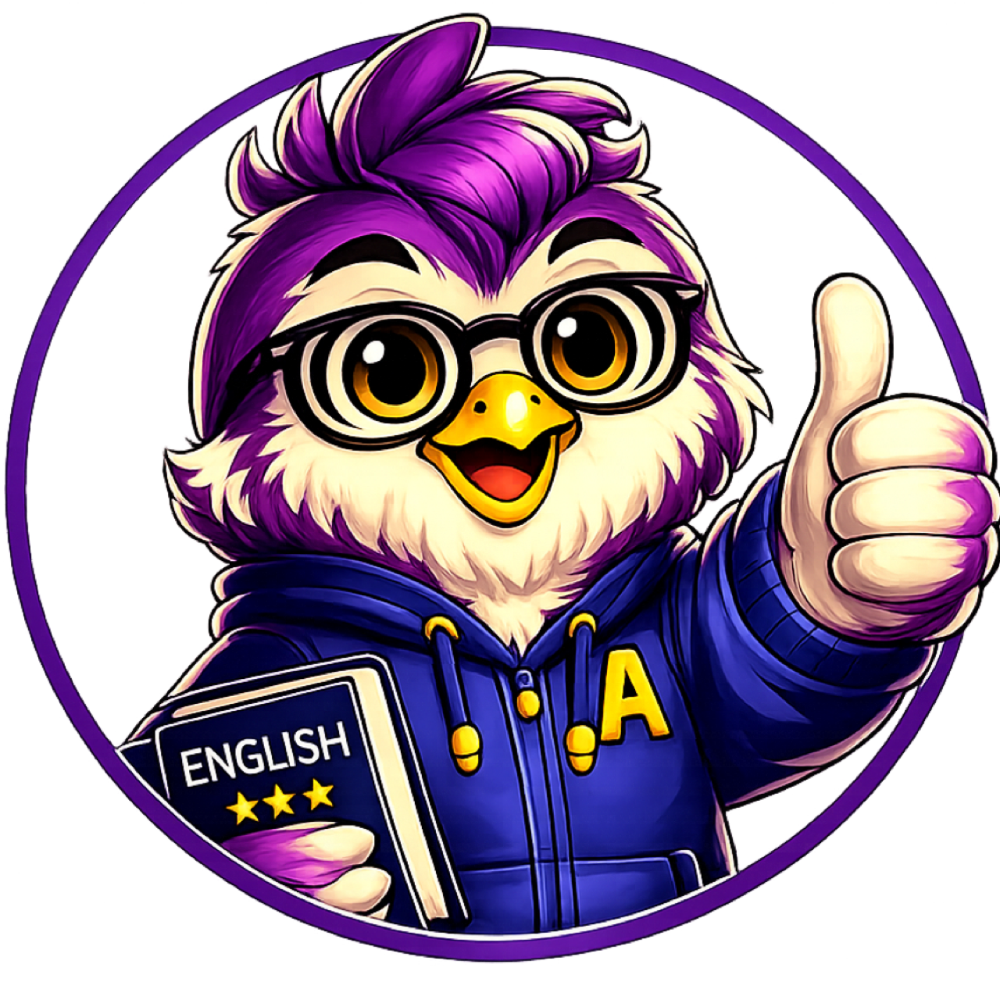

📖 Reading Practice | A, An & The
تدرّب على استخدام أدوات التعريف والتنكير داخل سياقات وقراءات طبيعية
💡 Before You Start
لا تقلق إذا لم تفهم النص بالكامل من أول مرة؛ فهذا أمر طبيعي، وليس مطلوبًا منك فهم كل كلمة. حاول أن تفهم الفكرة العامة وتلتقط ما تستطيع، ثم استمع إلى التسجيل واقرأ النص مرة أخرى. وإذا فهمت النص كله فهذا ممتاز، لكن لا تجعل عدم فهم بعض الكلمات يمنعك من إكمال التدريب. الهدف الأساسي هنا أن تتدرّب على استخدام A وAn وThe داخل سياقات وجمل طبيعية، وأن تلاحظ كيف تظهر هذه الأدوات في القراءة اليومية. ركّز عليها أثناء القراءة واستمتع بالتدريب!
A Day at a New School
Reading practice · Beginner A1–A2
A Day at a New School
A1–A2It is Monday morning, and Sara is starting a new school. She wakes up early and puts on her uniform. She has a small bag, a notebook, and an English book. Before she leaves home, her mother gives her an apple and a bottle of water. Sara walks to the bus stop and waits for the school bus.
When she arrives, she sees a big building with a beautiful garden. A teacher is standing near the main door. The teacher smiles and asks Sara her name. Sara tells her that she is a new student. The teacher takes her to a classroom on the first floor. There are twenty students in the room, and they are talking to each other. Sara finds an empty chair next to a friendly girl. The girl introduces herself and helps Sara find the right page in her book. At the end of the day, Sara feels happy because she has made a new friend and learned many things.
A Visit to the Market
Reading practice · Beginner A1–A2
A Visit to the Market
A1–A2On Saturday morning, Adam goes to a market with his father. They need to buy some food for the week. First, they visit a fruit shop. Adam chooses an orange, a banana, and some grapes. His father also buys an apple for Adam's little sister. Then they go to a small shop next to the fruit shop.
Adam sees a beautiful red bag in the window, but he does not need a new bag. His father buys a loaf of bread and a bottle of milk. After that, they visit the supermarket to buy other things. Adam helps his father find the eggs, the cheese, and the rice. He also sees a man selling fresh flowers near the entrance. His father buys a flower for Adam's mother. Before they leave, they stop at a café and order a sandwich and a cup of tea. Adam enjoys the trip because he likes spending time with his father. When they arrive home, they put the food in the kitchen and give the flower to his mother.
A Day at the Beach
Reading practice · Beginner A1–A2
A Day at the Beach
A1–A2Mona and her family are spending the day at the beach. They arrive early in the morning because the weather is nice. Mona takes a towel, a hat, and a small bag with her. Her brother brings an umbrella and a ball. When they reach the beach, they find a quiet place near the water.
Their father puts the umbrella on the sand, and their mother takes the food out of a large box. Mona sees a little crab near her feet and watches it move across the sand. After breakfast, she and her brother play with the ball. They also swim in the sea for a short time. Later, the family walks along the beach and takes some pictures. Mona finds a beautiful shell and puts it in her bag. In the afternoon, the sun becomes very hot, so they sit under the umbrella and drink cold water. Before they go home, Mona looks at the sea one more time. She feels tired but happy because it is a wonderful day with her family.
🎉 Great Job!
أحسنت! أنهيت تدريبات القراءة. تذكّر أن أفضل طريقة لتعلّم A وAn وThe هي ملاحظتها داخل الجمل والسياقات المختلفة، ثم استخدامها بنفسك.